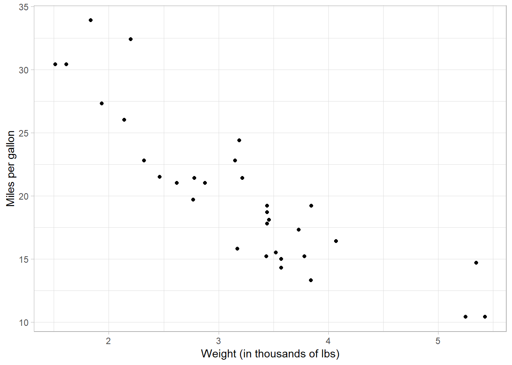
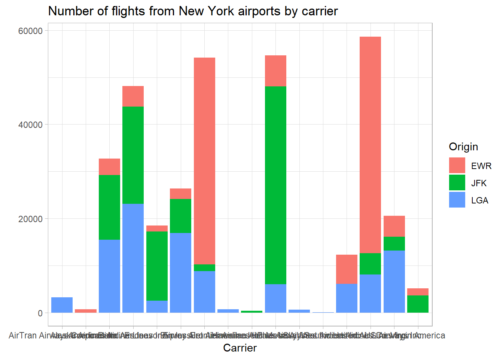

Hadley Wickham, chief scientist at RStudio (and ISU alum!), said in A Layered Grammar of Graphics:
A grammar of graphics is a tool that enables us to concisely describe the components of a graphic.
The ggplot2 package is built around the idea of “building up a graphic from multiple layers of data.” In other words, we’re building up our plot from individual pieces, one function call at a time.
The function call for ggplot is:
ggplot(data, mapping = aes(...)) +
<geom_layers> +
<additional layers>Here, each of the different objects represents a layer:
data is the data object that you would like to visualize and mapping contains the aesthetic mappings to use; that is, the mapping of which aesthetics to which variables. geom_layers are what actually draw the points onto the canvas; for example, geom_point will create a scatter plot. * There are additional layers you can use to make your graph prettier.
A ggplot call might look like:
mtcars %>%
ggplot(aes(x = wt, y = mpg)) +
geom_point()Let’s change the x- and y-axis titles to be a little more informative:
mtcars %>%
ggplot(aes(x = wt, y = mpg)) +
geom_point() +
labs(x = "Weight (in thousands of lbs)",
y = "Miles per gallon")
We can also introduce other aesthetics into the plot. For example, let’s color the dots by the number of cylinders they have:
mtcars %>%
ggplot(aes(x = wt, y = mpg)) +
geom_point(aes(color = cyl)) +
labs(x = "Weight (in thousands of lbs)",
y = "Miles per gallon")We can also change the size of the points by setting size to a specific number:
mtcars %>%
ggplot(aes(x = wt, y = mpg)) +
geom_point(aes(color = cyl),
size = 3) +
labs(x = "Weight (in thousands of lbs)",
y = "Miles per gallon")And let’s change a few more things to make the graph a bit prettier:
mtcars %>%
ggplot(aes(x = wt, y = mpg)) +
geom_point(aes(color = cyl)) +
labs(x = "Weight",
y = "Miles per gallon",
title = "Miles per gallon versus weight for automobiles",
subtitle = "Data from Motor Trend magazine") +
theme_light()size aesthetic (qsec, for instance).?theme_light and try out a few other themes.For the rest of the day, we’re going to work more with the flights dataset. Let’s begin by getting a histogram of the flights using geom_bar:
flights %>%
ggplot(aes(x = carrier)) +
geom_bar()We can look up the airline codes by using airlines. Doing so, we see that United Airlines, JetBlue, and ExpressJet Airlines have the most flights out of New York in 2013.
airlines %>%
filter(carrier %in% c("UA", "EV", "B6"))## # A tibble: 3 x 2
## carrier name
## <chr> <chr>
## 1 B6 JetBlue Airways
## 2 EV ExpressJet Airlines Inc.
## 3 UA United Air Lines Inc.Let’s fill in the bars with the name of the origin airport:
flights %>%
ggplot(aes(x = carrier, fill = origin)) +
geom_bar()Let’s polish the graph a little:
flights %>%
ggplot(aes(x = carrier, fill = origin)) +
geom_bar() +
labs(x = "Carrier",
y = "",
title = "Number of flights from New York airports by carrier",
fill = "Origin")Next, let’s try and use the full carrier name. We have access to the carrier name from the airlines list. We will use inner_join to add the information from airlines to the flights data:
flights %>%
inner_join(airlines, by = "carrier")## # A tibble: 336,776 x 20
## year month day dep_time sched_dep_time dep_delay arr_time
## <int> <int> <int> <int> <int> <dbl> <int>
## 1 2013 1 1 517 515 2 830
## 2 2013 1 1 533 529 4 850
## 3 2013 1 1 542 540 2 923
## 4 2013 1 1 544 545 -1 1004
## 5 2013 1 1 554 600 -6 812
## 6 2013 1 1 554 558 -4 740
## 7 2013 1 1 555 600 -5 913
## 8 2013 1 1 557 600 -3 709
## 9 2013 1 1 557 600 -3 838
## 10 2013 1 1 558 600 -2 753
## # ... with 336,766 more rows, and 13 more variables: sched_arr_time <int>,
## # arr_delay <dbl>, carrier <chr>, flight <int>, tailnum <chr>,
## # origin <chr>, dest <chr>, air_time <dbl>, distance <dbl>, hour <dbl>,
## # minute <dbl>, time_hour <dttm>, name <chr>Now we have an additional column at the end for the full name of the carrier. Let’s revisit our earlier graph with this new information:
flights %>%
inner_join(airlines, by = "carrier") %>%
ggplot(aes(x = name, fill = origin)) +
geom_bar() +
labs(x = "Carrier",
y = "",
title = "Number of flights from New York airports by carrier",
fill = "Origin") 
?theme and look at axis.text.x to learn how to rotate the text. Feel free to search online, also.airports data contains full airport names for several airports. Repeat the inner_join process above to combine this information into the data frame above. Look at the resulting data frame. What do you see different here? How can you use what you’ve learned today to fix this? Hint: One solution is to use mutate.facet_wrap and use it to separate the chart into there separate bar plots. Alternatively, read the Details section of the documentation for geom_bar for another way to address this problem.
Paul Villanueva
Ph.D. Student - Bioinformatics and Computational Biology
Iowa State University, Ames, IA.